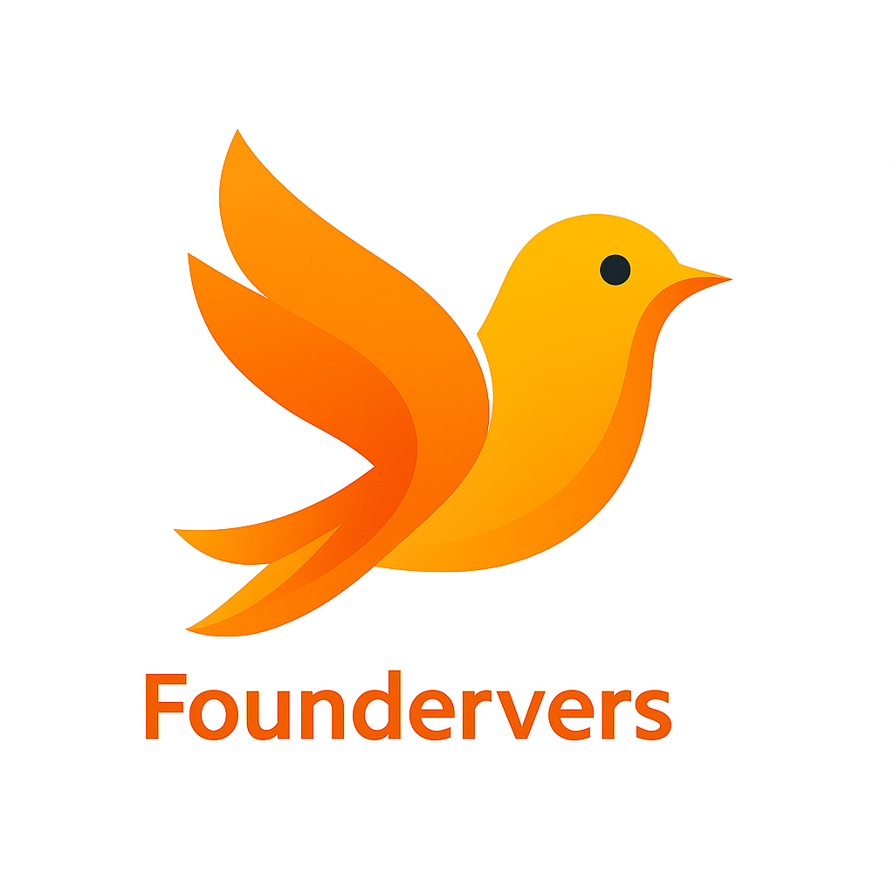

[cite_start]
[cite_start]

[cite_start]
founder Vers - Mobile & Web App
[cite: 16] [cite_start]Architected and developed a full-stack startup networking application featuring user authentication, dynamic posts, real-time messaging, and investment tracking, built with a feature-first architecture[cite: 19, 20, 22].
[cite_start]Technologies: Flutter, Dart, PostgreSQL, Supabase, Docker, Git[cite: 17].